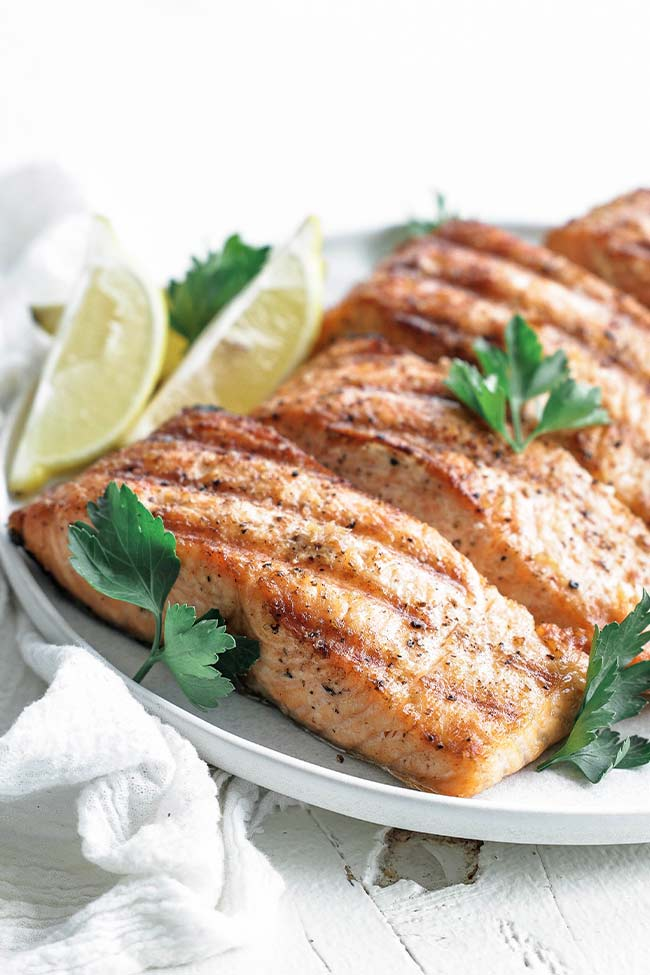

Appetizers
-
Caprese Salad

Fresh tomatoes, mozzarella, and basil drizzled with balsamic glaze.
-
Grilled Salmon
Seasoned salmon fillet grilled and finished with lemon-butter sauce and seasonal greens.
-
Stuffed Mushrooms
Button mushrooms filled with a savory blend of cheese, herbs, and breadcrumbs, baked until golden.
Descriptions
Caprese Salad** is a classic Italian dish that’s simple, fresh, and full of flavor. It’s made with **ripe tomatoes**, **fresh mozzarella cheese**, and **basil leaves**, typically arranged in alternating slices. The salad is drizzled with **extra virgin olive oil** and sometimes a touch of **balsamic glaze** or **salt and pepper** to enhance the taste. It’s a light and refreshing starter** that beautifully showcases the colors of the Italian flag — red (tomato), white (mozzarella), and green (basil).
Descriptions
Stuffed Mushrooms are a savory and elegant appetizer packed with rich flavors and irresistible aroma. 🍄🧀 They’re made by filling mushroom caps — usually button or cremini mushrooms — with a tasty mixture of ingredients such as cream cheese, breadcrumbs, garlic, herbs, and grated Parmesan. Some variations include crab meat, spinach, or sausage for extra depth of flavor. Once filled, the mushrooms are baked until golden and tender, creating a delicious contrast between the juicy mushroom and the creamy, crispy filling. The result is a bite-sized delight that’s perfect for parties or as a flavorful starter — warm, cheesy, and full of umami goodness. 🌿🔥
Descriptions
Delicious bite-sized mushrooms filled with a savory blend of cream cheese, garlic, herbs, and breadcrumbs. Baked until golden and tender, these appetizers offer a rich, earthy flavor with a creamy, crispy texture — perfect for starting any meal.